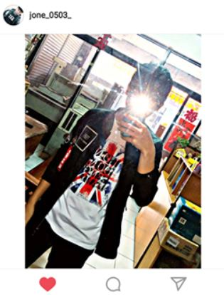

個人簡介
姓 名：張懷恩（ ZHANG,HUAI-EN ）
性 別：男性
生 日：1998 ／05 ／03
兵 役:未服役
學 歷：國立勤益科技大學（就讀中）
這是我的第一個網頁
學校幹部 : -- 糾察隊
班級幹部 :-- 文書股長 & 副 班 長
社團幹部 :-- 棋藝社 (活動股長 )
班級幹部 :-- 班代
班級幹部 :-- 學藝
在高職的生活中為了能夠學習到更多東西，於是常常參加了各種活動。.
參加創世基金會-華山天使團志工成員
參加103學年度擔任圖書室志工服務績效良好
參加教育部舉辦2015全國能源科技創意實作競賽
榮獲 第15屆保德信青少年志工菁英獎（服務獎）
參加亞斯伯格症肯納症協會---假日志工/冬令營志工
參加國立師範大學第十二屆學生團隊技術創造力培訓與競賽
.
參加光華高工校內技藝競賽電機控制組--榮獲第三名
參加2015全國高中職路能創意風力發電競賽--榮獲銀牌
參加第55屆國立暨縣(市)公私立高級中等學校科展--高中組佳作
參加建國科大舉辦2016台灣創新產品設計開發競賽---榮獲銀牌獎
參加東南科大舉辦2015全國高中職學生創新創意競賽----榮獲優勝
參加全國高級中等學校讀書心得寫作1031031梯甲等1040315梯--優等
中華明國技術士證-室內配線(丙級)
中華明國技術士證-工業配線(丙級)
電腦技能基金會-中文打字(實用級)
電腦技能基金會-Linux網路管理(專業級)
電腦技能基金會-Linux系統管理(專業級)
電腦技能基金會-雲端技術及網路服務(專業級)
.
昌潤科技有限公司:擔任職位-配線學徒
工作內容：1.隨師父學習各種電機電子相關產業
2.機台配盤整線(內外線)
3.光纖的插線配盤檢測
.
 .